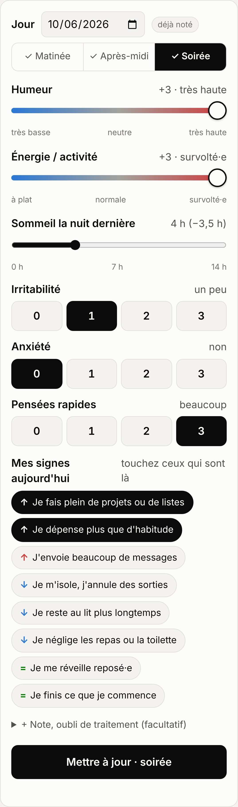
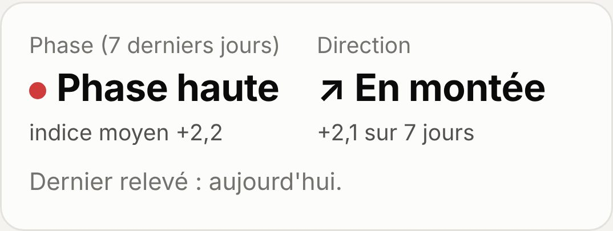
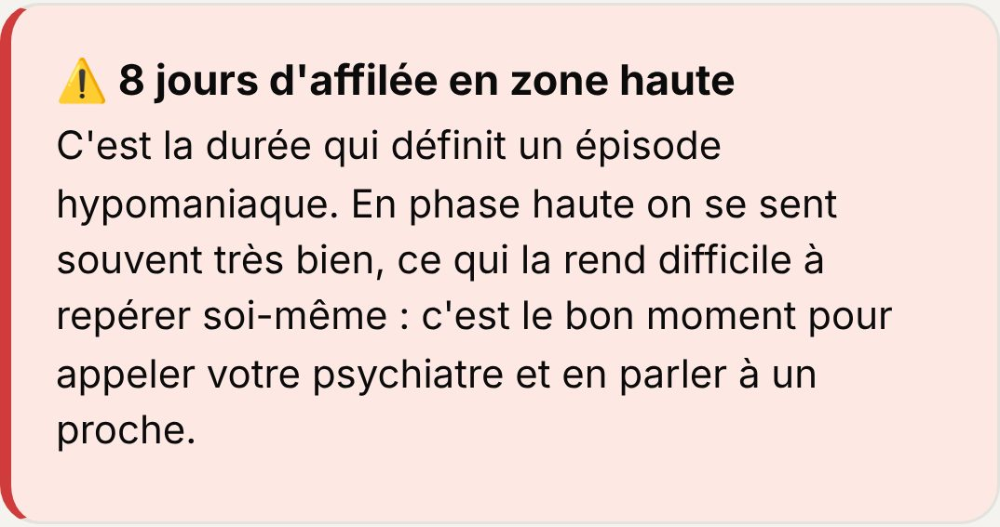
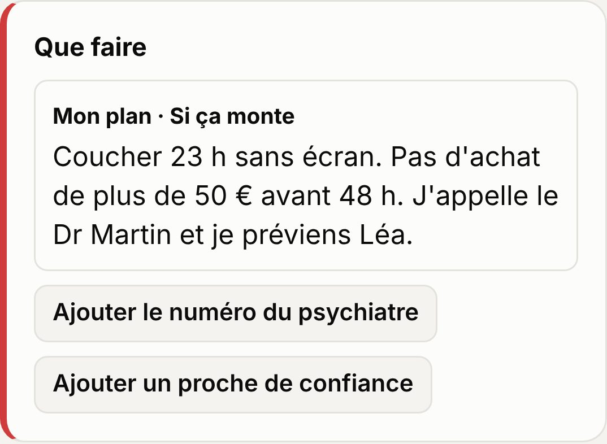
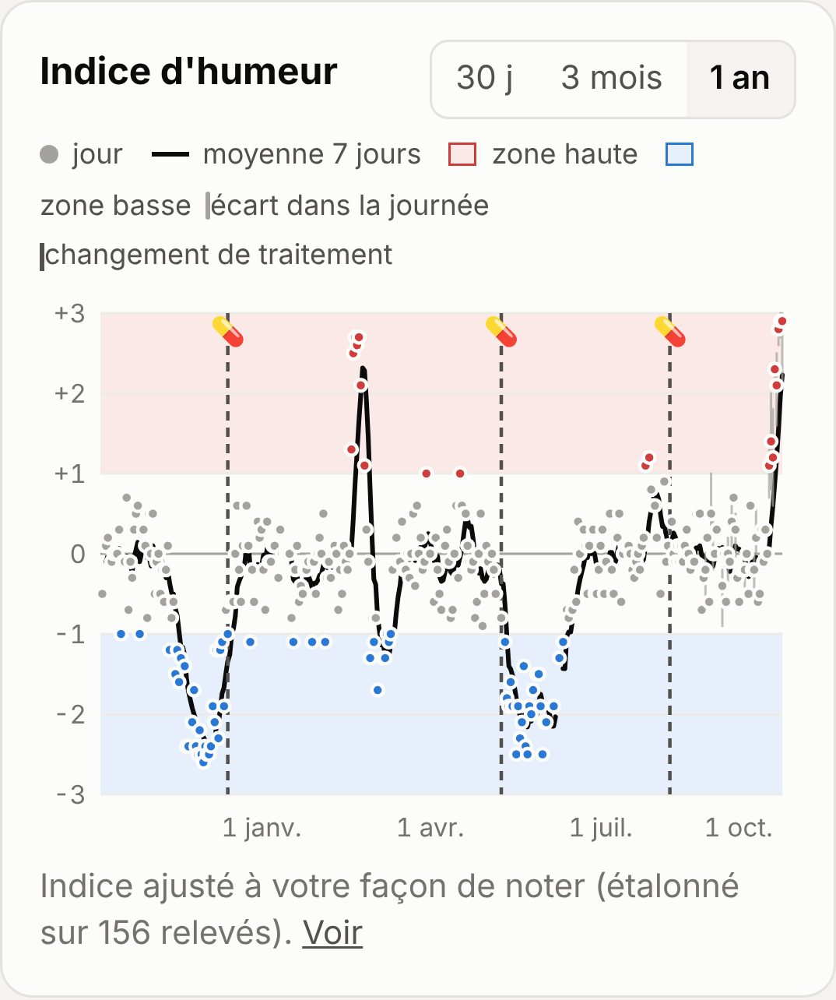
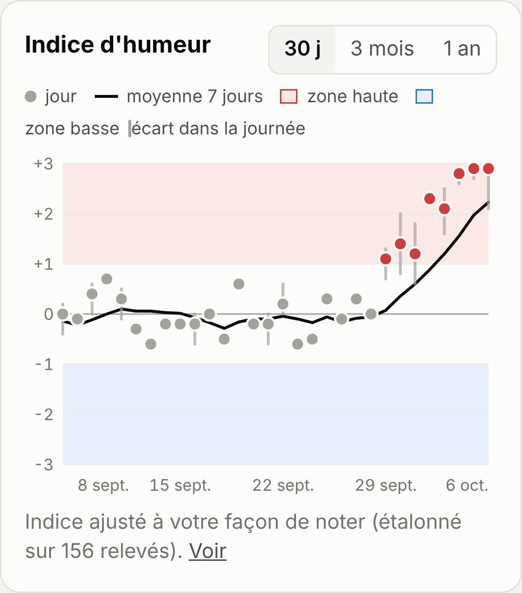
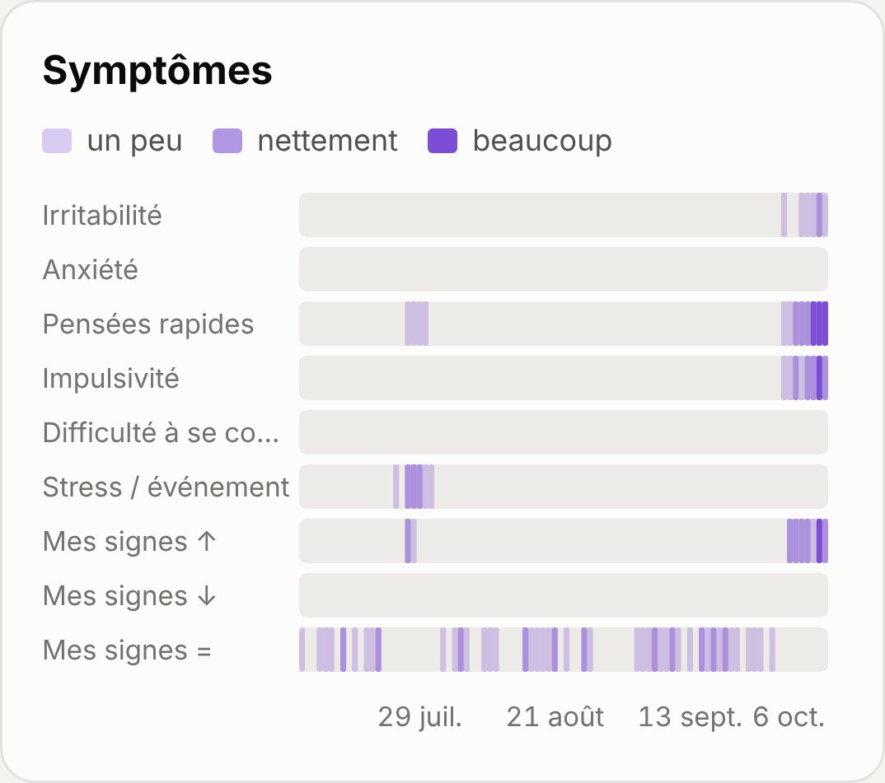
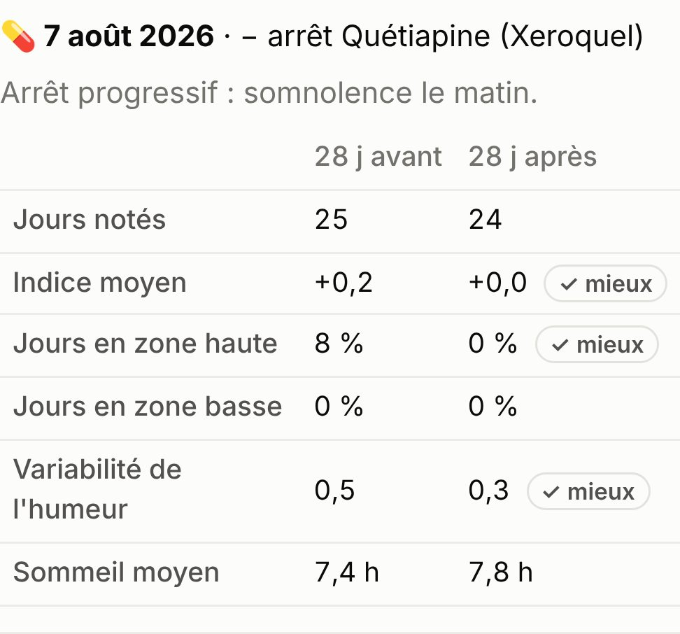
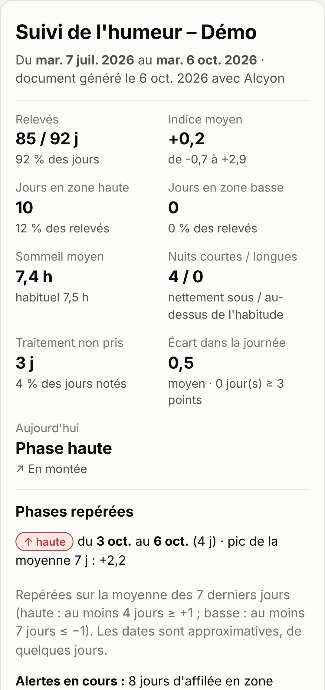
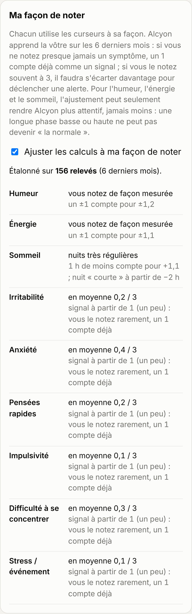

Sur quoi s'appuient les calculs d'Alcyon
Ce document présente l'application, puis décrit précisément ce que l'application demande au patient, comment elle en tire un indice, des phases et des alertes, sur quelles sources elle s'appuie, et où se trouvent des choix qui restent à valider. Il est destiné à une relecture par un·e psychiatre.
Version du 6 octobre 2026. Les valeurs ci-dessous sont celles du code de l'application à cette date (fichier app.js).
L'application en bref
Alcyon est une application pour téléphone qui aide une personne vivant avec un trouble bipolaire à suivre son humeur au jour le jour, à voir sur quelques semaines ou quelques mois si elle est plutôt en train de monter, de descendre, en phase haute ou en phase basse, et à savoir quand il serait utile de contacter son psychiatre ou un proche. Elle vise surtout le type II, où l'hypomanie est souvent agréable et passe inaperçue pour la personne elle-même.
Elle s'installe depuis le navigateur comme une application (iPhone et Android), fonctionne hors connexion, et garde toutes les données sur le téléphone : pas de compte, pas de serveur.
Au quotidien
- Noter
Le soir (ou 2 à 3 fois par jour), quelques curseurs : humeur, énergie, sommeil, 2 ou 3 symptômes, et ses signes personnels. Environ 5 à 10 secondes. - Voir où on en est
L'app affiche la phase des 7 derniers jours et la direction (montée, descente, stable). - Être prévenu
Si un schéma inquiétant apparaît (sommeil qui diminue, plusieurs jours en zone haute…), une alerte s'affiche avec son plan d'action et les numéros utiles. - En parler en consultation
Un récapitulatif imprimable résume la période depuis le dernier rendez-vous.
Visite guidée
Captures réalisées avec le mode démonstration de l'application : un an de données entièrement fictives (un profil de type II avec deux épisodes dépressifs, deux hypomanies, un épisode mixte et une hypomanie qui débute).










Comment lire ce document. Chaque élément porte une étiquette :
1. Objet et périmètre
Alcyon est un outil d'auto-surveillance de l'humeur pour des personnes vivant avec un trouble bipolaire, pensé en particulier pour le type II, où l'hypomanie est souvent vécue comme agréable et donc difficile à repérer soi-même. Le principe est celui du life charting : une notation brève et quotidienne, dont l'accumulation rend visibles les tendances, les phases et leurs déclencheurs.
- Ce n'est pas un outil de diagnostic et il ne se substitue pas à une évaluation clinique. Les alertes invitent à contacter le psychiatre ou un proche ; elles ne posent aucune conclusion.
- Temps de saisie visé : 5 à 10 secondes, une à trois fois par jour. Les valeurs de la saisie précédente sont reprises par défaut ; le patient ne modifie que ce qui a changé.
- Aucune donnée ne quitte le téléphone (voir § 11).
2. Ce que le patient note
| Item | Échelle | Pourquoi | Statut |
|---|---|---|---|
| Humeur | −3 à +3 (très basse → très haute), 0 = neutre | Axe central du life chart : polarité et intensité. | Adapté NIMH-LCM, MONARCA |
| Énergie / activité | −3 à +3 | L'augmentation de l'activité fait partie du critère A de l'hypomanie et précède souvent l'élévation de l'humeur. | Littérature DSM-5, ASRM |
| Sommeil | heures, par pas de 30 min, nuit précédente | Le besoin réduit de sommeil est un symptôme cardinal de l'hypomanie et l'un des prodromes les plus fréquents ; les changements de sommeil précèdent souvent un changement d'humeur dès le lendemain. | Littérature Jackson 2003, Andrade-González 2020, Bauer 2006 |
| Irritabilité | 0–3 (non / un peu / nettement / beaucoup) | Présente en phase haute, en phase basse et dans les états mixtes. | Littérature DSM-5 (critère A) |
| Anxiété | 0–3 | Fréquente ; associée aux caractéristiques mixtes. | Adapté |
| Pensées rapides | 0–3 | Fuite des idées, logorrhée : symptôme B de l'hypomanie (item « parole » de l'ASRM). | Littérature DSM-5, ASRM |
| Optionnels | 0–3 | Impulsivité (dépenses, risques), difficultés de concentration, stress / événement, alcool / substances. Choisis par le patient, idéalement avec son psychiatre. | Adapté MONARCA |
| Signes personnels | à cocher | Signes avant-coureurs propres au patient (phase haute / basse) et signes de stabilité. Voir § 8. | Littérature Perry 1999 |
| Oubli de traitement | case « je n'ai pas pris mon traitement » | Le traitement est considéré comme pris par défaut ; seul l'oubli est saisi. | Choix à valider |
| Note libre | 280 caractères | Événements de vie, déclencheurs (principe du life chart). | Littérature NIMH-LCM |
Différence notable avec la NIMH-LCM : le life chart du NIMH cote la sévérité d'après le retentissement fonctionnel (léger, modéré, sévère). Alcyon demande une auto-évaluation subjective de l'humeur, plus rapide mais sans ancrage fonctionnel. Le libellé des niveaux (« un peu haute », « haute », « très haute ») n'est pas défini plus précisément.
3. L'indice du jour
Pour tracer une seule courbe, les trois mesures principales sont combinées en un indice de −3 (bas) à +3 (haut) :
indice = 0,5 × humeur
+ 0,3 × énergie
+ 0,2 × écart de sommeil
écart de sommeil = sommeil habituel − heures dormies,
borné à [−3 ; +3]
1 h de moins que d'habitude → +1 (vers le haut)
1 h de plus → −1 (vers le bas)
sommeil habituel = réglé par le patient
(« quand je vais bien »), 7 h 30 par défaut
- Choix à valider Pondérations 50 / 30 / 20. L'humeur domine parce qu'elle est l'axe du life chart ; l'énergie et le sommeil sont inclus parce qu'ils bougent souvent avant l'humeur dans l'hypomanie. Aucune étude ne fixe ces poids.
- Choix à valider Sommeil long → vers le bas. L'hypersomnie accompagne souvent la dépression bipolaire, mais pas toujours ; un sommeil long peut aussi être une récupération.
- Zones : zone haute si indice ≥ +1, zone basse si indice ≤ −1. Choix à valider
- Les symptômes 0–3 n'entrent pas dans l'indice (pour qu'il reste comparable si le patient change ses items) ; ils servent aux alertes.
4. Plusieurs relevés par jour
Le patient peut choisir 1, 2 ou 3 relevés par jour (journée ; matinée + après-midi/soirée ; matinée + après-midi + soirée), chacun avec un rappel à l'heure choisie. La variabilité intra-journalière de l'humeur est en effet une dimension à part entière de l'instabilité de l'humeur.
| Donnée | Valeur retenue pour la journée | Statut |
|---|---|---|
| Humeur, énergie | Moyenne des relevés de la journée | Choix à valider |
| Symptômes 0–3 | Maximum de la journée (un après-midi très irritable ne doit pas être dilué) | Choix à valider |
| Signes personnels | Union des signes cochés dans la journée | |
| Sommeil, oubli, note | Communs à la journée | |
| Écart intra-journalier | Max − min de l'humeur entre les relevés ; tracé sur le graphe | Adapté Broome 2015 |
5. Phase et direction
phase = moyenne de l'indice sur les 7 derniers jours
calendaires (au moins 3 jours notés)
≥ +1 phase haute
≥ +0,5 tendance haute
≤ −0,5 tendance basse
≤ −1 phase basse
sinon stable
direction = pente de la droite des moindres carrés
sur ces 7 jours (au moins 3 points)
> +0,15 / jour en montée
< −0,15 / jour en descente
sinon plutôt stable
Choix à valider La fenêtre de 7 jours lisse le bruit quotidien mais introduit un retard de quelques jours ; les seuils ±0,5 et ±1 sont des choix.
6. Les alertes
Les alertes ne sont calculées que si le dernier relevé date d'aujourd'hui ou d'hier ; sinon, l'app signale l'absence de relevé (l'interruption du suivi coïncide souvent avec un changement d'humeur). « Jours d'affilée » = jours calendaires consécutifs notés ; un jour manquant interrompt la série. Les alertes graves (⚠️) proposent d'appeler le psychiatre et/ou un proche ; une carte « Que faire » affiche le plan d'action du patient.
| Alerte | Condition exacte | Niveau | Fondement |
|---|---|---|---|
| Zone haute prolongée | Indice ≥ +1 pendant 2 jours d'affilée (vigilance) ; 4 jours ou plus (alerte) | vigilance → grave | Littérature DSM-5 : épisode hypomaniaque ≥ 4 jours consécutifs |
| Moins de sommeil, sans fatigue | Sur les 3 derniers jours : ≥ 2 nuits courtes (≥ 2 h sous l'habituel, voir § 7) et au moins un jour d'énergie ≥ +1. Grave si humeur ≥ +1 un de ces jours. | vigilance / grave | Littérature Jackson 2003, Bauer 2006 ; seuil 2 h à valider |
| Pensées qui accélèrent | ≥ 2 jours sur 3 avec pensées rapides ou impulsivité « inhabituelles » (≥ 2/3, ou seuil personnel § 7). Grave si indice ≥ +1 ou nuit courte ces jours-là. | vigilance / grave | Littérature DSM-5 critère B |
| Impulsivité forte | Impulsivité 3/3 (ou seuil personnel fort) un des 3 derniers jours. Conseil : règle des 48 h avant dépense ou décision importante. | vigilance | Choix à valider |
| Signes mixtes | ≥ 2 jours sur 3 avec humeur ≤ −1 et (énergie ≥ +1 ou irritabilité / anxiété / pensées rapides inhabituelles). Déclenche aussi l'encart de crise. | grave | Adapté DSM-5, spécificateur « caractéristiques mixtes » |
| Zone basse prolongée | Indice ≤ −1 : 3 jours d'affilée (vigilance), 7 jours (contacter le psychiatre), 14 jours (alerte grave) | vigilance → grave | Littérature DSM-5 : épisode dépressif caractérisé ≥ 2 semaines ; paliers 3 et 7 j à valider |
| Humeur très changeante dans la journée | ≥ 2 jours sur 3 avec un écart ≥ 3 points entre relevés d'une même journée. Grave si signes mixtes. | vigilance / grave | Adapté Broome 2015 ; seuil à valider |
| Irritabilité fréquente | ≥ 3 jours sur 7 avec irritabilité inhabituelle (hors signes mixtes) | vigilance | Choix à valider |
| Anxiété persistante | ≥ 4 jours sur 7 avec anxiété inhabituelle (hors signes mixtes) | vigilance | Choix à valider |
| Signes personnels | Phase haute : sur 3 jours, ≥ 3 coches ou ≥ 2 signes différents. Phase basse : même règle sur 5 jours. Grave si associé à 2 jours en zone haute ou une nuit courte (haute), ou 3 jours en zone basse (basse). | vigilance / grave | Littérature Perry 1999 ; règle de comptage à valider |
| Montée / chute rapide | |moyenne des 3 derniers jours − moyenne des 7 jours précédents| ≥ 1,5 | vigilance | Choix à valider |
| Traitement oublié | ≥ 2 oublis sur les 7 derniers jours. Conseille d'en parler plutôt que d'arrêter seul. | vigilance | Choix à valider |
7. Étalonnage personnel (« ma façon de noter »)
Chacun utilise une échelle subjective à sa façon : une personne très mesurée ne note presque jamais 3, une autre l'utilise souvent. Pour comparer la personne à elle-même (approche idiographique), l'app apprend ses habitudes de notation.
déclenchement : ≥ 21 relevés sur les 180 derniers jours
(désactivable par le patient)
repère = médiane des valeurs
amplitude = 1,25 × écart absolu moyen à la médiane
(≈ écart-type pour une loi normale, plus robuste)
Symptômes 0–3 (ajustement dans les deux sens)
repère plafonné à 2 ; amplitude ≥ 0,5
« inhabituel » si valeur ≥ 1
et (valeur − repère) / amplitude ≥ 1,5
(« fort » : ≥ 2,5)
sans étalonnage : inhabituel si ≥ 2 (fort : = 3)
Humeur, énergie (ne peut que rendre plus sensible)
repère fixé à 0 (neutralité clinique)
amplitude bornée à [0,6 ; 1]
valeur ajustée = valeur / amplitude, bornée à [−3 ; +3]
Sommeil (ne peut que rendre plus sensible)
amplitude bornée à [0,75 ; 1]
écart ajusté = (habituel − dormi) / amplitude
nuit courte (ou longue) : écart ≥ 1,5 h
et écart / amplitude ≥ 2
sans étalonnage : écart ≥ 2 h
- Exemples. Patient qui note presque toujours l'irritabilité à 0 : un 1 devient « inhabituel ». Patient qui la note souvent à 2 : seul un 3 l'est. Patient très mesuré sur l'humeur (amplitude 0,6) : un +1 compte pour +1,7.
- Garde-fou essentiel. Une première version recentrait aussi l'humeur sur la médiane du patient. En test, 30 jours notés à −2 suivis de 30 jours à 0 faisaient apparaître la phase dépressive à −0,6, donc hors zone basse : une dépression longue devenait « la normale ». La règle actuelle empêche ce masquage : pour l'humeur, l'énergie et le sommeil, l'étalonnage ne peut que rendre l'app plus attentive, jamais moins.
- Choix à valider Seuil de 21 relevés, fenêtre de 180 jours, bornes d'amplitude, seuils z de 1,5 / 2,5 : aucun n'est issu d'une étude ; le patient voit le détail de son étalonnage dans l'app.
- Choix à valider Un symptôme noté souvent haut (moyenne ≥ 1,5 / 3) est signalé au patient comme « très présent au quotidien, à évoquer en consultation », puisque l'étalonnage le rend moins visible dans les alertes.
8. Signes personnels et plan d'action
Le patient constitue sa propre liste de signes, chacun rattaché à la phase haute (↑), à la phase basse (↓) ou à la stabilité (=). Des suggestions sont proposées (« je dors moins sans être fatigué·e », « je dépense plus que d'habitude », « je m'isole, j'annule des sorties », « je me réveille reposé·e »…). Il rédige aussi un plan d'action pour chaque pôle (« si ça monte… », « si ça descend… »), affiché avec les alertes.
Littérature L'identification des prodromes personnels (relapse signature) et d'une conduite à tenir précoce est une intervention évaluée : dans l'essai de Perry et al. (1999), elle allonge le délai avant rechute maniaque et réduit les rechutes maniaques ; une revue Cochrane (Morriss et al., 2007) va dans le même sens. Les revues systématiques montrent que la plupart des patients peuvent décrire leurs prodromes, avec une grande variabilité individuelle, d'où une liste personnelle plutôt qu'une liste fixe.
Les signes de stabilité ne déclenchent aucune alerte ; ils servent de point de repère positif (et leur disparition peut se remarquer sur le graphe).
9. Traitement : comparaison avant / après
Le patient saisit son traitement (médicament, dose, moment de prise) et chaque changement daté. Chaque changement est marqué d'une ligne sur le graphe. Pour chaque changement, l'app compare deux périodes :
avant : 28 jours précédant le changement
(ou depuis le changement précédent, s'il est plus récent)
après : 28 jours à partir du changement
(ou jusqu'au changement suivant / aujourd'hui)
comparaison seulement si ≥ 7 jours notés de chaque côté
indicateurs : indice moyen
% de jours en zone haute, % en zone basse
variabilité (écart-type de l'indice)
sommeil moyen
« mieux » : indice moyen plus proche de 0, moins de jours
en zones, moins de variabilité (écart ≥ 0,05)
Choix à valider Il s'agit d'une comparaison descriptive, pas d'une mesure d'effet. Biais principaux : délai d'action variable selon la molécule (souvent plusieurs semaines) ; régression vers la moyenne (un traitement est souvent modifié au plus fort d'un épisode, une amélioration ensuite est attendue même sans effet propre) ; autres changements simultanés ; données manquantes. L'app affiche cet avertissement.
10. Récapitulatif de consultation
Document imprimable couvrant la période depuis la dernière consultation notée (par défaut 3 mois) : nombre de relevés, indice moyen et étendue, jours en zones haute et basse, sommeil, nuits courtes et longues, oublis de traitement, écart intra-journalier moyen, graphes, tableau des symptômes, signes personnels, traitement et changements, plan d'action, notes.
phases repérées : moyenne 7 jours
≥ +1 pendant au moins 4 jours → phase haute
≤ −1 pendant au moins 7 jours → phase basse
Comme la moyenne glissante est décalée, les dates de début et de fin sont approximatives de quelques jours ; le document le précise.
11. Sécurité et confidentialité
- Stockage local uniquement (stockage du navigateur du téléphone) : pas de compte, pas de serveur, pas de base de données, pas de statistiques d'usage.
- Une politique de sécurité de contenu (
connect-src 'none') interdit techniquement à la page d'envoyer la moindre requête réseau. - Le patient exporte lui-même ses données (sauvegarde JSON, tableau CSV, récapitulatif PDF / HTML) et décide à qui les transmettre.
- Contrepartie : sans serveur, les rappels ne partent que si l'app est ouverte ou en arrière-plan, et une perte du téléphone sans sauvegarde fait perdre l'historique (l'app rappelle de sauvegarder après 30 jours).
12. Limites connues
- Aucune validation clinique d'Alcyon lui-même : ni sensibilité, ni spécificité des alertes, ni corrélation avec des échelles cliniques (YMRS, MADRS, QIDS…). Les seuils sont des choix raisonnés, pas des valeurs étalonnées.
- Auto-évaluation et insight. En hypomanie, l'insight peut diminuer : le patient peut sous-coter son humeur. C'est pourquoi le sommeil, l'énergie, les signes concrets et l'avis des proches sont mis en avant ; il n'existe pas encore de saisie par un proche.
- Effet de la surveillance. Dans l'essai MONARCA I (Faurholt-Jepsen et al., 2015), l'auto-surveillance quotidienne sur smartphone n'a pas réduit les symptômes dépressifs (ils étaient même plus persistants dans le groupe intervention), mais était associée à moins de symptômes maniaques. L'auto-surveillance n'est pas neutre et doit s'inscrire dans un suivi.
- Pas d'ancrage fonctionnel des niveaux d'humeur, contrairement à la NIMH-LCM.
- Données manquantes : un jour non noté interrompt les séries ; les moyennes sont calculées sur les jours notés.
- Pas de prise en compte du cycle menstruel, des saisons, ni des cycles rapides (≥ 4 épisodes par an) en tant que tels.
13. Questions pour la relecture
Les points sur lesquels un avis clinique serait le plus utile :
- Pondérations de l'indice (50 % humeur, 30 % énergie, 20 % sommeil) : vous semblent-elles raisonnables pour un trouble bipolaire de type II ? Faudrait-il donner plus de poids au sommeil ou à l'énergie pour détecter l'hypomanie plus tôt ?
- Seuils de zone (±1 sur l'indice) et seuils de phase (±0,5 et ±1 sur la moyenne 7 jours).
- Paliers des alertes : 2 puis 4 jours en zone haute ; 3, 7 puis 14 jours en zone basse. Faut-il réagir plus tôt pour la phase basse ?
- Nuit courte : seuil de 2 h sous le sommeil habituel (1 h 30 chez un dormeur très régulier). Bauer et al. (2008) évoquent un changement de durée de sommeil de plus de 3 h comme annonciateur d'un changement d'humeur important ; un seuil plus bas est-il pertinent pour une alerte précoce ?
- Définition opérationnelle des signes mixtes (humeur ≤ −1 avec énergie haute ou irritabilité / anxiété / pensées rapides inhabituelles, 2 jours sur 3) : trop large, trop étroite ?
- Plusieurs relevés par jour : moyenne pour l'humeur, maximum pour les symptômes. Et le seuil d'écart intra-journalier (≥ 3 points, 2 jours sur 3).
- Étalonnage personnel : le principe vous paraît-il cliniquement acceptable ? Les bornes choisies suffisent-elles à éviter de masquer un épisode ?
- Risque suicidaire : l'app n'interroge pas directement les idées suicidaires. Faut-il ajouter une question (par exemple facultative, ou déclenchée quand l'humeur est très basse), et avec quelle conduite à tenir ?
- Lignes d'écoute et formulation de l'encart de crise et des messages d'alerte.
- Comparaison avant / après traitement : utile en consultation, ou risque de sur-interprétation par le patient ?
- Items manquants qui vous semblent importants (ex. idées de grandeur, libido, appétit, ralentissement, retentissement fonctionnel, événements de vie).
14. Références
- American Psychiatric Association. Diagnostic and Statistical Manual of Mental Disorders, 5e éd. (DSM-5). 2013. Critères de l'épisode hypomaniaque (≥ 4 jours consécutifs), de l'épisode dépressif caractérisé (≥ 2 semaines) et spécificateur « avec caractéristiques mixtes ».
- Denicoff KD, Leverich GS, Nolen WA, et al. Validation of the prospective NIMH-Life-Chart Method (NIMH-LCM™-p) for longitudinal assessment of bipolar illness. Psychological Medicine. 2000. cambridge.org
- NIMH Life Chart Method – fiche patient (mood chart). depts.washington.edu
- Schärer LO, Krienke UJ, Graf SM, et al. Validation of life-charts documented with the personal life-chart app – a self-monitoring tool for bipolar disorder. BMC Psychiatry. 2015. PMC4367878
- Faurholt-Jepsen M, Frost M, Ritz C, et al. Daily electronic self-monitoring in bipolar disorder using smartphones – the MONARCA I trial: a randomized, placebo-controlled, single-blind, parallel group trial. Psychological Medicine. 2015;45(13):2691–2704. cambridge.org
- Faurholt-Jepsen M, et al. Daily electronic monitoring of subjective and objective measures of illness activity in bipolar disorder using smartphones – the MONARCA II trial protocol. pure.itu.dk
- Altman EG, Hedeker D, Peterson JL, Davis JM. The Altman Self-Rating Mania Scale. Biological Psychiatry. 1997. présentation
- Jackson A, Cavanagh J, Scott J. A systematic review of manic and depressive prodromes. Journal of Affective Disorders. 2003;74(3):209–217. eprints.gla.ac.uk
- Andrade-González N, Álvarez-Cadenas L, Saiz-Ruiz J, Lahera G. Initial and relapse prodromes in adult patients with episodes of bipolar disorder: a systematic review. European Psychiatry. 2020. Les troubles du sommeil / la diminution du besoin de sommeil y figurent parmi les prodromes de rechute les plus cités avant un épisode (hypo)maniaque (13,8 à 85,7 % selon les études). PMC7315869
- Bauer M, Grof P, Rasgon N, et al. Temporal relation between sleep and mood in patients with bipolar disorder. Bipolar Disorders. 2006;8(2):160–167. PubMed
- Bauer M, et al. Changes in self-reported sleep duration predict mood changes in bipolar disorder (research letter). Psychological Medicine. 2008 (en ligne). cambridge.org
- Perry A, Tarrier N, Morriss R, McCarthy E, Limb K. Randomised controlled trial of efficacy of teaching patients with bipolar disorder to identify early symptoms of relapse and obtain treatment. BMJ. 1999;318:149–153. PMC27688
- Morriss R, Faizal MA, Jones AP, et al. Interventions for helping people recognise early signs of recurrence in bipolar disorder. Cochrane Database of Systematic Reviews. 2007. cochranelibrary.com
- Broome MR, Saunders KEA, Harrison PJ, Marwaha S. Mood instability: significance, definition and measurement. British Journal of Psychiatry. 2015;207(4):283–285. PMC4589661